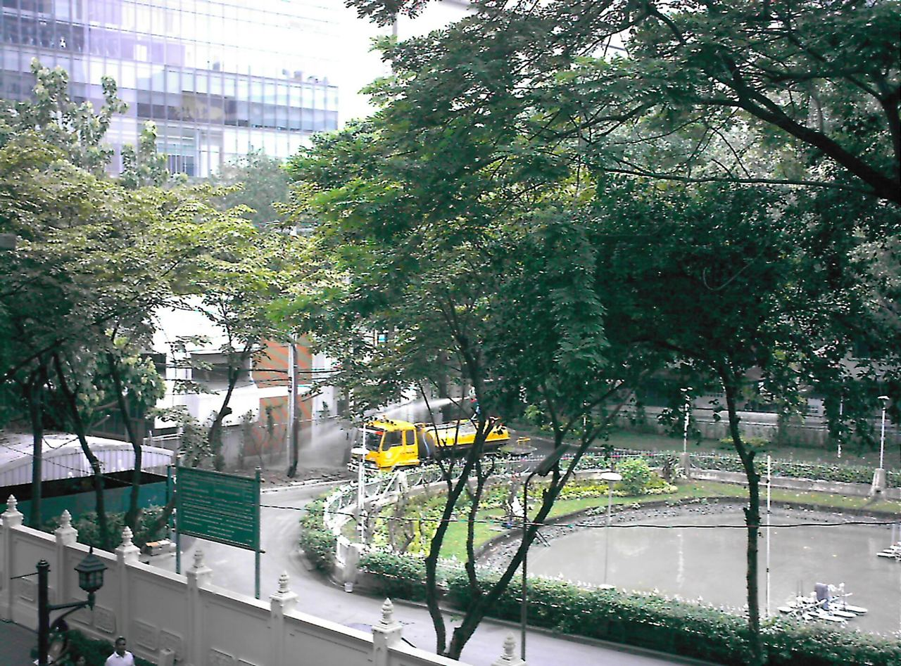
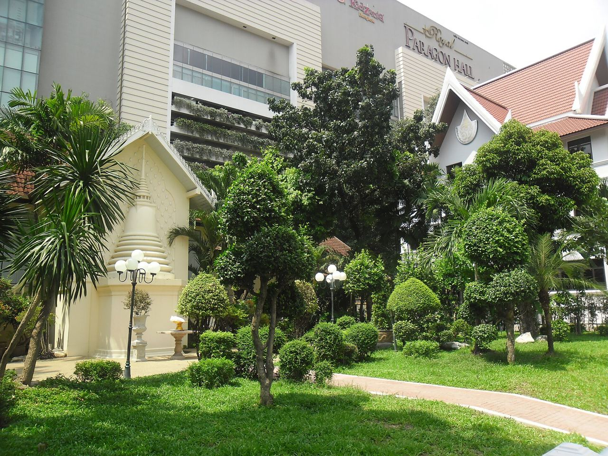
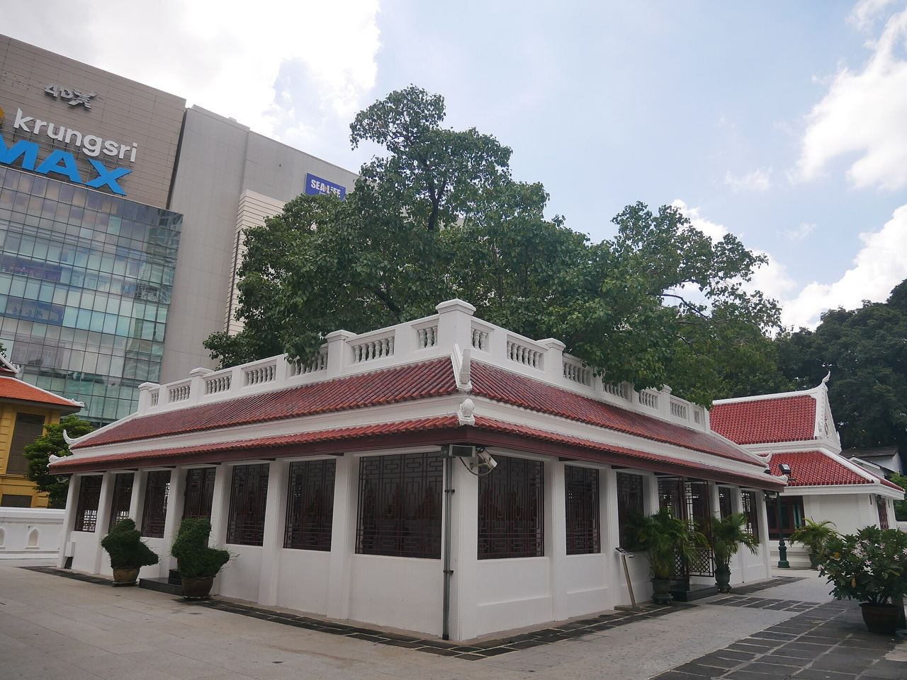
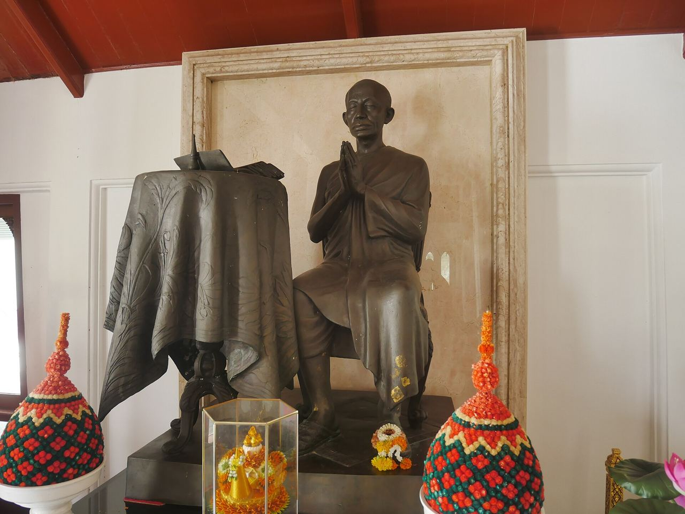
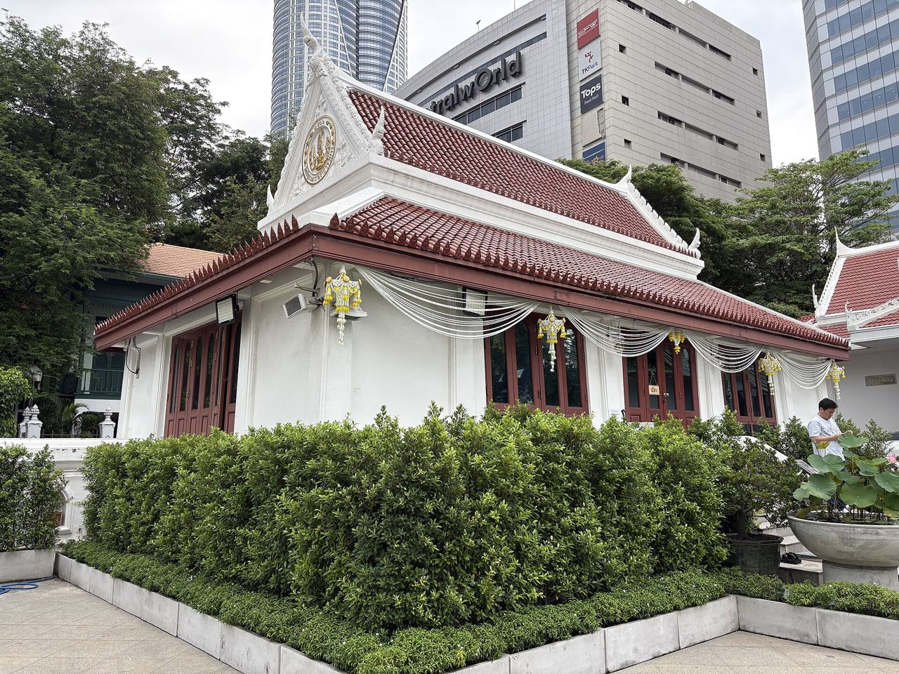
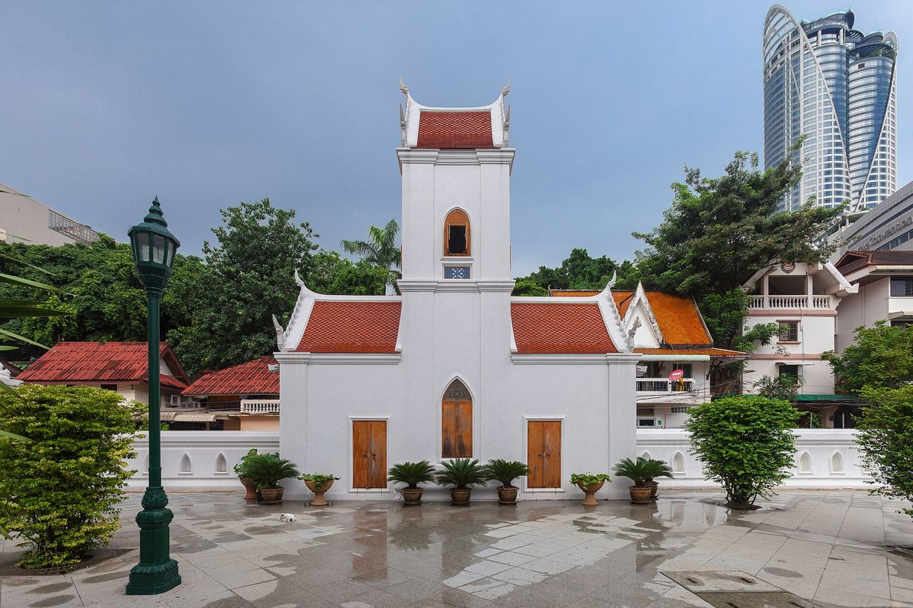
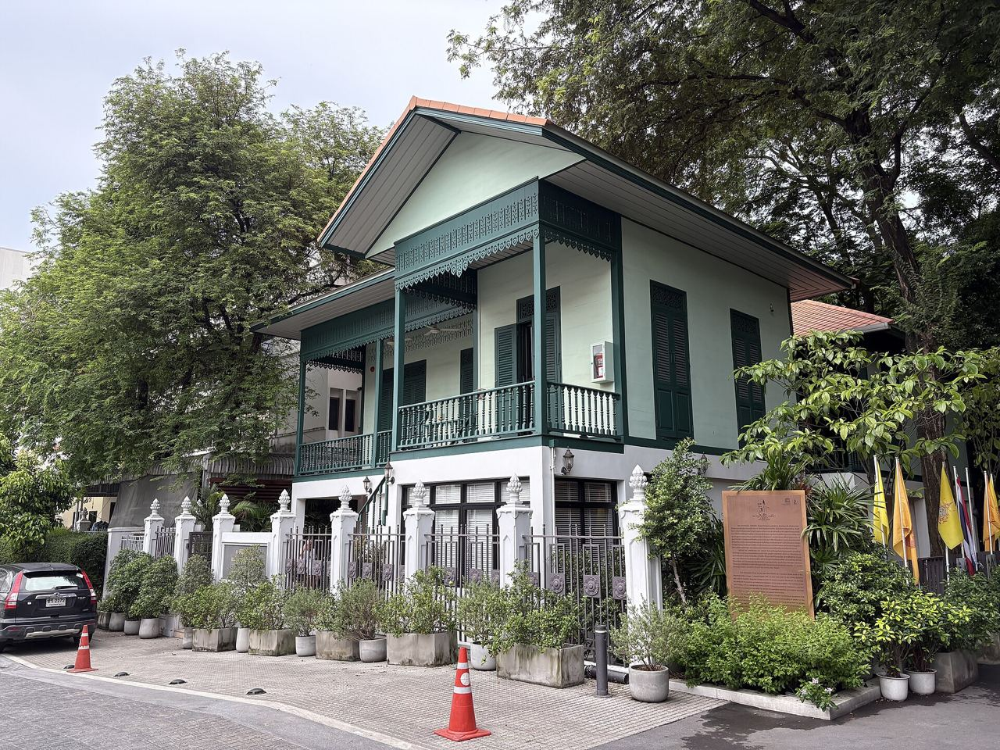
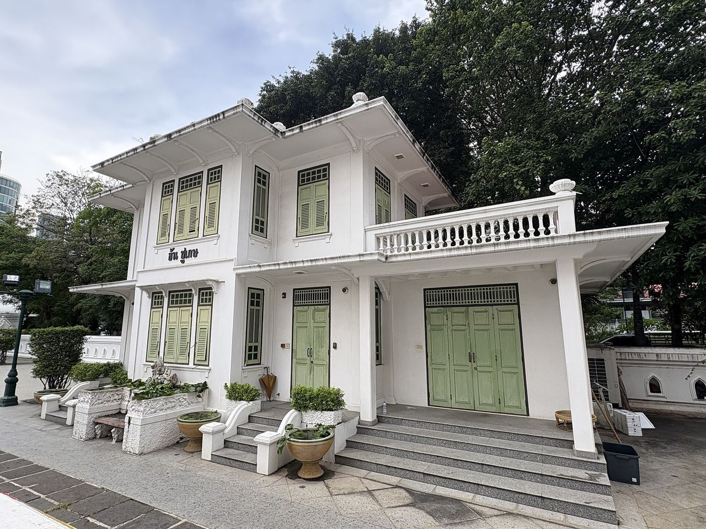

สระปทุม
สระน้ำที่พระอุโบสถหันหน้าเข้าหา ในรัชกาลที่ 4 พระสงฆ์เคยพายเรือรับบิณฑบาตจากพระมหากษัตริย์และฝ่ายในที่สระแห่งนี้
นอกจากพระอุโบสถ พระเจดีย์ และพระวิหาร ภายในวัดยังมีอาคารและพื้นที่ที่เล่าประวัติของวัดอีกหลายแห่ง
อาคารและพื้นที่

อาคารหลักของวัด พระอุโบสถประดิษฐานพระสายน์ พระวิหารประดิษฐานพระเสริมและพระแสน ดูรายละเอียดในหน้าศิลปะ

สระน้ำที่พระอุโบสถหันหน้าเข้าหา ในรัชกาลที่ 4 พระสงฆ์เคยพายเรือรับบิณฑบาตจากพระมหากษัตริย์และฝ่ายในที่สระแห่งนี้

พระสถูปตั้งอยู่ด้านหน้าโรงเรียนพระปริยัติธรรม เป็นที่ประดิษฐานพระบรมอัฐิ พระอัฐิ และพระราชสรีรางคารของพระบรมวงศานุวงศ์ในราชสกุลมหิดล ดูรายพระนาม

จุดสักการะสำคัญของวัด แผนผังของวัดเรียกว่าโพธิฆระ

อนุสรณ์ถวายพระเกียรติแด่พระบาทสมเด็จพระจอมเกล้าเจ้าอยู่หัว ผู้ทรงสถาปนาวัด

ศาลาทางทิศตะวันออกเฉียงเหนือของพระอุโบสถ ประดิษฐานรูปปิดทองของอดีตเจ้าอาวาสและพระเถระสำคัญ เริ่มจากเจ้าอาวาสรูปแรก

หอระฆังและหอกลองเป็นอาคารประจำเขตพุทธาวาส ปรากฏอยู่ในแผนผังของวัด

พระอาจารย์มั่นเคยจำพรรษาที่วัดนี้ พิพิธภัณฑ์จัดนิทรรศการถาวรเล่าชีวิตและหลักธรรมของท่าน

แผนผังของวัดระบุว่าเป็นอาคารอนุรักษ์ ตั้งอยู่ภายในเขตวัด
พื้นที่ปฏิบัติธรรม
ด้านหลังวัดมีป่ากลางเมืองที่ต้นไม้ใหญ่ปกคลุมหนาแน่น จนแทบมองไม่เห็นตึกสูงรอบด้าน ใช้เป็นที่ปฏิบัติธรรม เจริญวิปัสสนา นั่งสมาธิ และฟังธรรม ศาลาพระราชศรัทธาตั้งอยู่ในสวนนี้ และเป็นที่ประดิษฐานพระบรมสารีริกธาตุ
อนุสรณ์สถานราชสกุลมหิดล
พระสถูปเป็นที่ประดิษฐานพระบรมอัฐิ พระอัฐิ พระราชสรีรางคาร และชิ้นส่วนแห่งพระสรีระ ของพระบรมวงศานุวงศ์ในราชสกุลมหิดล อาทิ